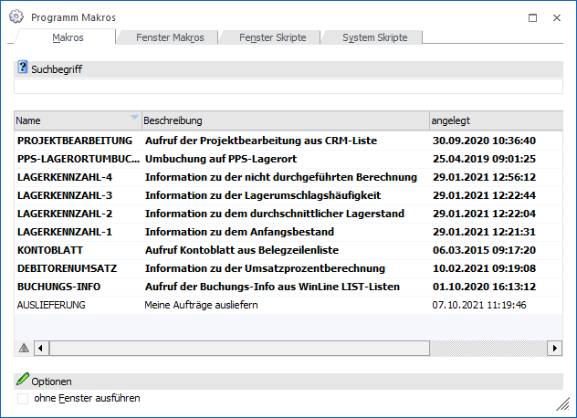
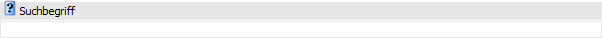
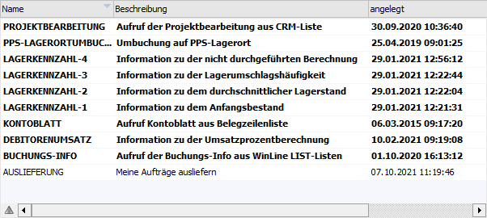
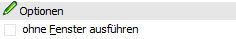
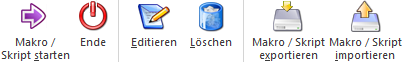

Die Verwaltung der Makros erfolgt im Programm WinLine START über den Menüpunkt…
1 Parameter
1 Programm Makros
… statt. Dort können neue Makros angelegt, bestehende Makros verändert oder gelöscht und auch Makros gestartet werden. Über dieses Fenster können allerdings keine Makros aufgezeichnet werden.

Das Fenster ist in vier Register verteilt, wobei ohne zusätzliche Lizenz die Register "Makros" und "Fenster Makros" zur Verfügung stehen. Die Register "Fenster Skripte" und "System Skripte" können nur angewählt werden, wenn die entsprechende MDP-RunTime-Lizenz zur Verfügung steht.
Suchbegriff

Die Auswahl kann durch die Eingabe eines Suchbegriffs eingeschränkt werden. Die Suche erfolgt in den Felder "Name" und "Bezeichnung".
Tabelle

Der Inhalt der Tabelle ist abhängig von dem aktuell gewählten Register:
ü Register "Makros"
Es werden in
der Tabelle alle WinLine Makros angezeigt. Diese werden in der Regel mit Hilfe
des Ribbons "INFO CENTER UND MAKROS" erzeugt.
ü Register "Fenster Makros"
Es
werden in der Tabelle alle Makros aus dem Bereich "Voreinstellungen" angezeigt.
Hierbei sieht ein Volladministrator alle erzeugten Voreinstellungen, ein
normaler Benutzer nur seine eigenen.
ü Fenster Skripte
In der Tabelle
werden alle Fenster Skripte angezeigt, welche in der Regel von WinLine
Fachhandelspartnern erzeugt werden. Solche Skripte werden in der Folge an
WinLine Fenster gehängt (per WinLine Screen Customizing).
ü System Skripte
In der Tabelle
werden alle System Skripte angezeigt, welche in der Regel von WinLine
Fachhandelspartnern erzeugt werden. Solche Skripte können ohne Zuordnung zu
einem WinLine Fenster ausgeführt werden.
Optionen

Ø ohne Fenster ausführen (nur in Register "Makros" und "System Skripte")
Wird diese Option aktiviert, dann werden alle Makros im "Silent-Mode" ausgeführt, d.h. es werden keine Meldungen ausgegeben, die ggfs. beim Aufnehmen des Makros angezeigt wurden. Das bewirkt auch, dass die einzelnen Fenster nur kurz geöffnet und wieder geschlossen werden und somit einen "zuckenden Effekt" auslösen.
Buttons

Ø Makro / Skript starten
Durch Anklicken des Buttons "Makro / Skript starten" bzw. der Taste F5 wird das gerade aktive Makro bzw. Skript ausgeführt.
Ø Ende
Durch Drücken des Buttons "Ende" bzw. der Taste ESC wird das Fenster geschlossen.
Ø Editieren
Durch Anklicken dieses Buttons kann der Inhalt des Makros / Skripts angesehen und auch verändert werden.
Ø Löschen
Durch Anklicken des Buttons "Löschen" wird das aktuell ausgewählte Makro / Skript gelöscht.
Ø Makro / Skript exportieren
Durch Anklicken des Buttons "Makro / Skript exportieren" kann das gerade aktive Makro in eine Textdatei exportiert werden. Diese Datei bekommt die Erweiterung "MMR".
Ø Makro / Skript importieren
Durch Anklicken dieses Buttons kann ein Makro (auch mehrere Makros) aus einer Textdatei importiert werden (ist auch mittels Drag & Drop möglich). Damit können Makros von einer Installation zu einer anderen transferiert werden.